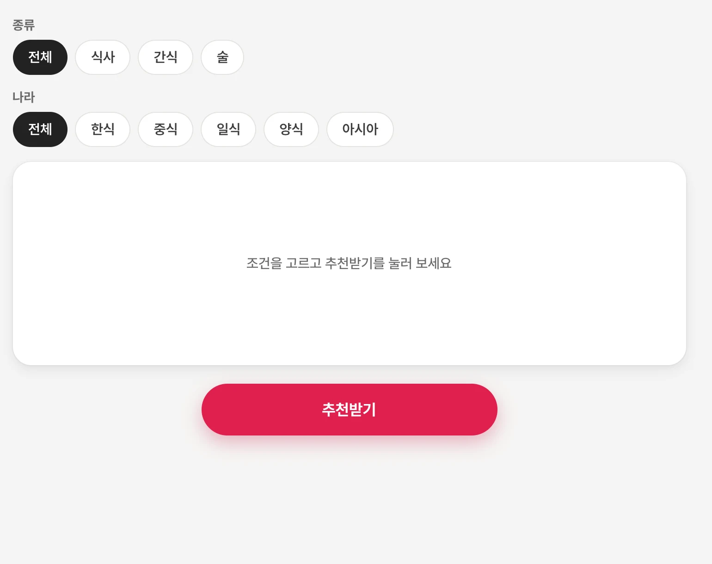
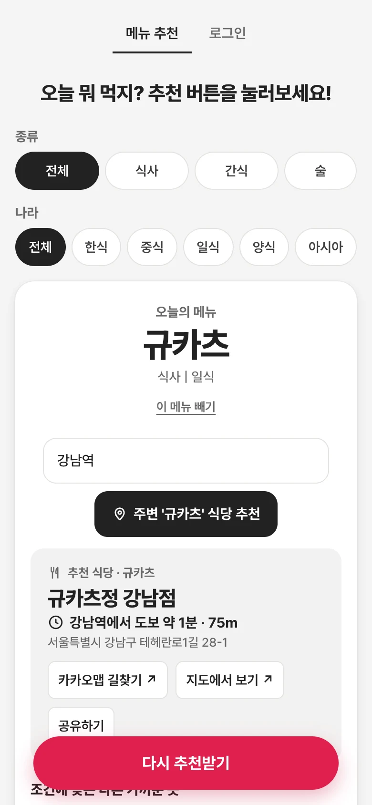
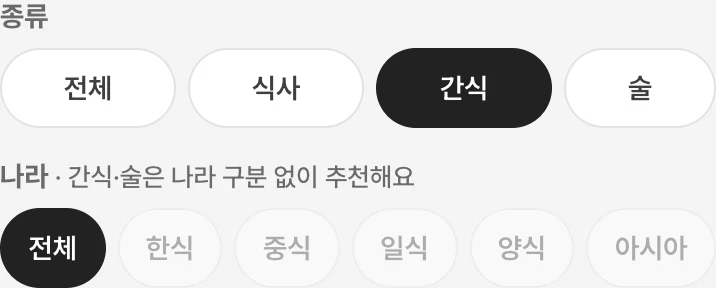
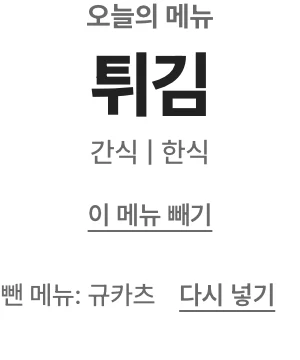
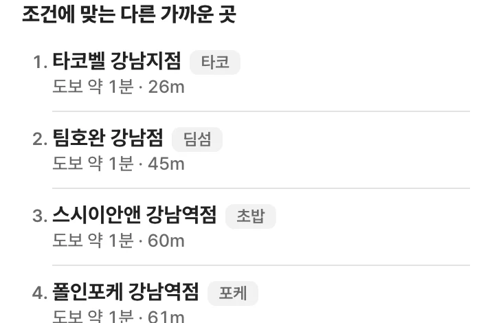

01골라서 추천받기
식사·간식·술 중에 종류를 고르고, 한식부터 아시아까지 나라를 고른 다음 추천받기를 눌러요. 최근에 나온 5개 메뉴는 다시 안 나와요!
오늘 메뉴 추천
오늘 뭐 먹지? 고민될 때
조건을 고르면 오늘의 메뉴를 골라 주는 웹사이트예요. 그 메뉴를 파는 주변 식당과 걸어가는 시간까지 같이 알려 줘요!


식사·간식·술 중에 종류를 고르고, 한식부터 아시아까지 나라를 고른 다음 추천받기를 눌러요. 최근에 나온 5개 메뉴는 다시 안 나와요!

간식이나 술을 고르면 나라는 '전체'로 고정돼요. 나라 구분 없이 골라 줘요!

'이 메뉴 빼기'를 누르면 그 메뉴를 빼고 바로 다시 골라 줘요. 마음이 바뀌면 '다시 넣기'로 되돌려요!

현재 위치나 '강남역' 같은 동네를 넣으면 그 메뉴를 파는 가까운 가게와 걸어가는 시간을 알려 줘요. 2km 안에 없으면 5km까지 넓혀 찾고, 카카오맵 길찾기와 공유하기도 바로 돼요!

고른 조건에 맞는 다른 가게들도 가까운 순서로 보여 줘요. 가게마다 어떤 메뉴로 골랐는지 태그로 알려 줘요!
학교 주변 맛집을 추천하던 예전 JSP 버전을 정적 사이트와 Supabase로 다시 만들었어요. 전국 식당은 OpenStreetMap과 소상공인시장진흥공단 상가(상권)정보에서 가져오고, 매달 두 출처를 자동으로 새로 받아요. 관리자는 로그인해서 메뉴를 고치고 문 닫은 가게를 숨길 수 있어요.